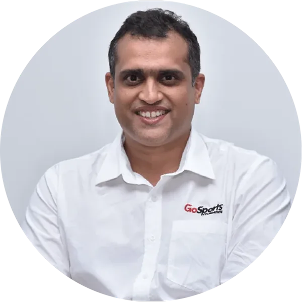
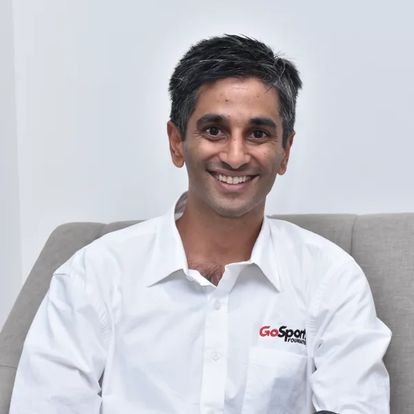
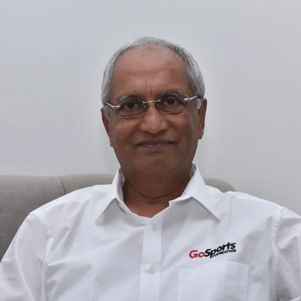
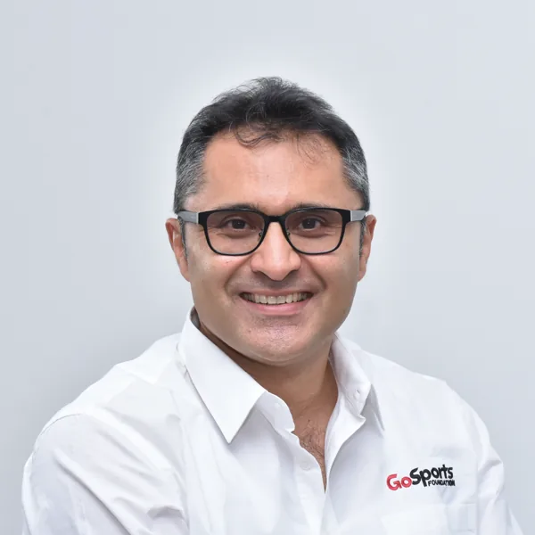
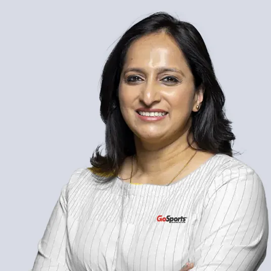
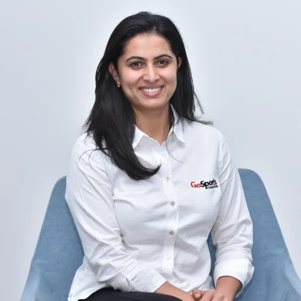
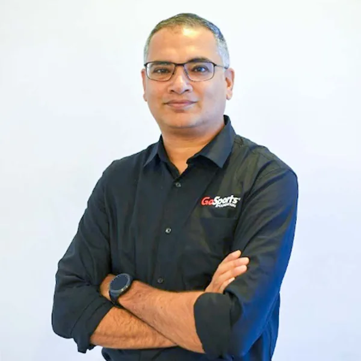
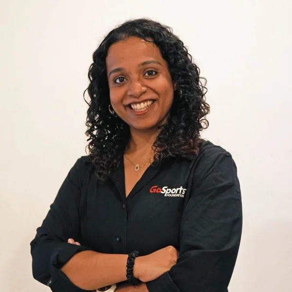
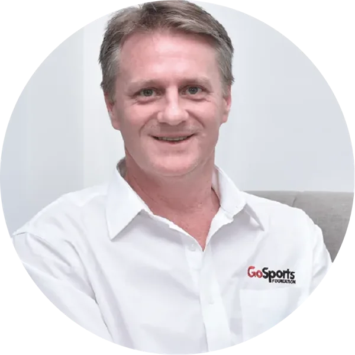

Championing excellence in Indian sport.
We identify gaps in Indian sport through research and design targeted programmes to close them — working with partners to strengthen the systems that enable excellence across the sporting ecosystem.
Sport builds more than athletes.
We believe sporting success strengthens human capital, creates livelihoods, and inspires collective ambition — which is why we build systems that connect participation, performance, and policy.
Ecosystem collaboration
We bring together partners, academies, institutions, and communities to create aligned, sustainable sporting networks.
Podium pathways
Structured high-performance environments that enable athletes to train, compete, and succeed at the global level.
Systemic impact
Sport builds discipline, resilience, and social capital — shaping individuals and strengthening communities and institutions.
Mission & vision
Our mission
To enable changemakers in building world-class talent systems. We bring together donors, coaches, experts, athletes, communities, governments, parents, academies, and federations to create aligned and accountable ecosystems. Because for excellence to endure, the systems behind it must work.
Our vision
To see India's athletes thrive as champions on the global stage and as catalysts for nation building. When athletes succeed, they inspire participation, strengthen communities, and build human capital — positioning sport as a central pillar of India's growth story.
The people steering the system
Named and pictured here directly from our FY 2025–26 Annual Report.
Trustees

Nandan Kamath
Managing Trustee
Also works extensively on legal and policy developments in the sports ecosystem, including the design of the Target Olympic Podium Scheme. Author of Boundary Lab (Penguin Viking), Sports Book of the Year at the Ekamra Literature Festival 2024.

Abhishek Laxminarayan
Trustee
Investor and advisor with 20+ years across public markets, private investments, and venture capital. Began his career in M&A at Lehman Brothers, founded Indavest, and most recently served as CIO at Catamaran.

Thomas Ollapally
Trustee
Managing Director, Nandi Housing Pvt Ltd. Graduate of the Indian Institute of Management, Ahmedabad.
Board Members

Unmish Parthasarathi
Board Member
Has volunteered with GoSports since 2016 — as senior advisor to the Trustees, mentor to the CEO, and first non-executive director and chairman of the governing board. Previously held leadership roles at IMG, the BBC, ESPN Star Sports & News Corp, and the ICC.

Meghana Narayan
Board Member
Founder of Slurrp Farm. Previously led the Public Health practice at McKinsey & Company. MBA from Harvard Business School; BA from Oxford as a Rhodes Scholar; BE with Distinction from Bangalore University.

Deepthi Bopaiah
Board Member
A former Karnataka state-level tennis player who moved from finance at HSBC into sports administration. Chevening Gurukul Fellow at Oxford and MBA graduate from SIMS; currently serves on the TOPS committee under the Ministry of Youth Affairs and Sports.
Executive Leadership

Saugato Banerjee
Chief Executive Officer

Sonali Anna Philip
Programmes

John Gloster
Director of Sports Science
18 years of dedication, innovation, and impact
Research, policy & the SAPA Stack
We produce India-centric research spanning sport and physical activity's (SAPA) impact on health, livelihoods, and economic growth — through the seven-layer SAPA Stack Framework, developed in partnership with academic and policy institutions.
40+ research outputs
Studies, policy briefs, and toolkits produced to date, including India's first SAPA glossary.
Policy adoption in 6 states
Research has directly informed policy integrating sport with health, education, and social agendas.
9 national convenings
Bringing together 300+ organisations and practitioners to share learnings and build consensus.